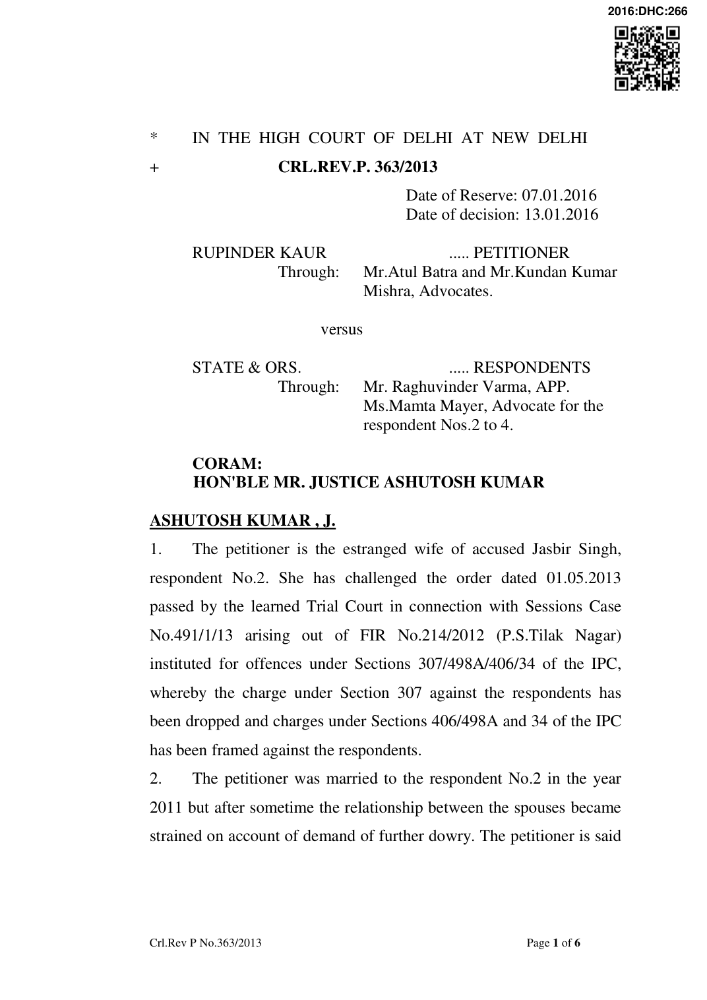

to have maintained reticence for quite some time in the hope that the situation would normalize. The major and the immediate cause of lodging of the FIR was an incident which occurred on 30.05.2012 when the petitioner was ill and had asked her husband for providing money for medicines. The petitioner is said to have been abused and ill treated. At about 9.45 PM, on the same day, when respondent No.2 was asked for medicine again by the petitioner, respondent No.2 is alleged to have poured a bottle of kerosene oil over her head and assaulted her. The petitioner is stated to have run out of the room and fell down on the floor. The mother-in-law, who was having a match box in her hand, came at the place where the petitioner had fallen down. Sensing serious trouble, the petitioner is said to have ran out in the streets and called her father. It is stated that the police reached after sometime and the petitioner was sent to the hospital for medical treatment. She had sustained injuries on her hands, chest and head. The learned Trial Court, on point of charge, was of the view that no offence under Section 307 of IPC could be made out as there was no material which could point towards the intention of the accused persons including respondent No.2 to attempt to commit murder of the petitioner.
- Learned counsel appearing for the petitioner has submitted that at the stage of framing of charge, the Court had to see the prima facie case only and was not required to sift the evidence or discuss the probability of conviction or acquittal under a pre criminal charge. It was further submitted that kerosene oil bottle was found from the site of the incident and when the petitioner was treated subsequently at a private hospital, she was diagnosed of infection arising out of kerosene. It was also submitted that in the investigation reports, there is reference of water in the bedroom which predicates that an attempt was made to destroy the evidence with respect to dousing of the petitioner with kerosene oil in an attempt to burn/kill her.
- As opposed to the aforesaid submissions, learned counsel appearing on behalf of the respondents submit that the incident took place on 30.05.2012 at about 10 pm. The petitioner was admittedly sent to hospital where the MLC was recorded at 11.50 pm. There is no reference in the MLC of the petitioner having been doused with kerosene oil. The MLC reflects that the petitioner herself disclosed that she was physically assaulted. It was further submitted that the crime team which had inspected the scene of crime had collected clothes of the complainant, bed sheet and plastic bottle. Only the kurta was found to have residue of kerosene oil as per the FSL report. Though residue of kerosene oil was found on the plastic bottle but in the absence of any chance print upon the plastic bottle, it could not be stated that it was the same plastic bottle which was used by respondent No.2 in pouring kerosene over the petitioner. What is of utmost importance, it has been argued, is that no trace of kerosene could be found on the bed sheet. Admittedly the petitioner was lying on the bed when she had demanded money for medicines and in retaliation to which, kerosene oil was poured over her body by respondent No.2. No match box also was found at the place of incident and no independent person was examined by the IO though a direction in that regard was issued by the Joint Commissioner of Police on 01.06.2012.
- Perused the MLC of the petitioner. It clearly discloses that the petitioner talked about her having been physically assaulted and did not at all speak about kerosene oil having been poured upon her. No such reference was made by the doctor who prepared the MLC. The presence of the residue of kerosene oil on the kurta of the petitioner and plastic bottle would be of no help as there is no evidence with regard to the same kurta and plastic bottle having been given to the police by the prosecution. The bed sheet, however, did not contain any residue of kerosene oil. Apart from this, there is no averment in the first information report of any attempt having been made by any one of the accused persons to ignite fire. The mother-in-law of the petitioner is only alleged to be carrying a match box. From the averments made in the first information report itself, it appears that in order to give a serious colour to the case, the allegation of dousing the petitioner with Kerosene oil was introduced.
- While exercising jurisdiction under Section 227 of the Code of Criminal Procedure a Judge is not required to act merely as a “post office” or “mouthpiece” of the prosecution but has to consider the broad probabilities of the case and the total effect of the evidence. In Union of India vs. Prafulla Kumar Samal and Anr, AIR 1979 3 SCC 4, the Supreme Court while dealing with the powers under Section 227 of the Code of Criminal Procedure has held:- “(1) That the Judge while considering the question of framing the charges under Section 227 of the Code has the undoubted power to sift and weigh the evidence for the limited purpose of finding out whether or not a prima facie case against the accused has been made out.
- Where the materials placed before the Court disclose grave suspicion against the accused which has not been properly explained the Court will be fully justified in framing a charge and proceeding with the trial.
- The test to determine a prima facie case would naturally depend upon the facts of each case and it is difficult to lay down a rule of universal application. By and large however if two views are equally possible and the Judge is satisfied that the evidence produced before him while giving rise to some suspicion but not grave suspicion against the accused, he will be fully within his right to discharge the accused.
- That in exercising his jurisdiction under Section 227 of the Code the Judge which under the present Code is a senior and experienced court cannot act merely as a Post Office or a mouthpiece of the prosecution, but has to consider the broad probabilities of the case, the total effect of the evidence and the documents produced before the Court, any basic infirmities appearing in the case and so on. This however does not mean that the Judge should make a roving enquiry into the pros and cons of the matter and weigh the evidence as if he was conducting a trial.”
- On applying the aforesaid principles, no prima facie case under Section 307 of the IPC can at all be said to have been made out. It was expected of the petitioner to have disclosed at the time of recording of her MLC that kerosene oil was poured upon her. She has also not stated whether any effort was made to burn her by her mother-in-law who was in possession of the match box. The certificate of the private doctor, therefore, does not inspire confidence.
- Thus for the aforesaid reasons, I do not find any fault with the order impugned whereby the charge under Section 307 of the IPC has been dropped against the respondents.
- The present revision petition fails and is, therefore, dismissed.
Crl.M.A.6301/2014
- In view of the petition having been dismissed, this application has become infructuous.
- This application is disposed of accordingly.
ASHUTOSH KUMAR, J
JANUARY 13, 2016 k